Review Grid
The review grid located in a review pass allows for dynamic review. For each document in the grid, quickly and easily identify metadata such as custodians, email, dates, tag group assignments, and more. Fields may be added to the Review grid even if the fields are not in the coding form. The fields that are available are based on permissions.
To review batches through ECA & Review, start with the following steps:
-
Click ECA & Review on the Home page or from the main menu.
-
From the Review home page, click the desired case card. The review passes load in the funnel graph.
-
Select the desired review pass located on the right side of the funnel graph. If the default setting was selected for the Review Pass, the review grid layout appears and the Document Views tab window appears in the foreground.
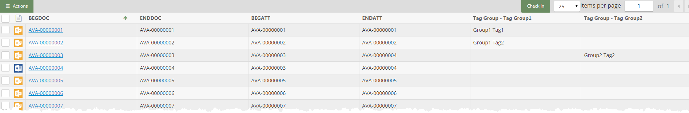
The first time the case is entered, the review grid columns will reflect the Tag Groups and fields for the selected coding form in Review Pass administration. The review grid is sorted based on the options set for the review pass. It also reflects the metadata for each document.
The review grid shows an:
- Action menu
- Review Status dropdown
- Check In button
- Grid navigation bar
- Column headers (fields that were configured for the Case's coding form)
- Item/document list.
The Review Status dropdown allows you to filter the documents in the review grid based on their review status. By selecting the various options in the drop-down list, you can filter by reviewed documents, unreviewed documents, or all documents.
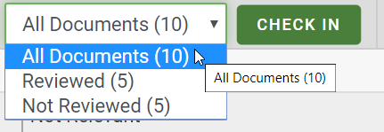
The item/document list contains an icon for the native file type (unknown file types display
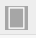
), BEGDOC link for each item, and column fields that were selected for the Case's coding form. If one or more tag groups were created for the Case, each tag group will appear as column name; for example Tag Group - Tag Group Name (e.g. Exclusive). If tags are applied for the item/document, those applied tags will appear in the related tag group column for the item/document as shown in the following example.
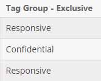
This allows easy visibility of tags without having to view each document or run a search. The review pass permissions control which tags are available in the review grid. Tags may be selected from the review grid.
The navigation bar, displayed above the review grid on the right side, shows the number of items/documents per page (default value 25) and the total number of items/documents. The grid displays the number of items/documents configured for the review pass.
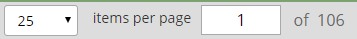
Change the total number of items/documents displayed in the grid by selecting a different value from the drop down.
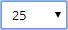
Use the left and right arrows to move to the next page or return to the previous page of items/documents.
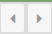
For information about manipulating, sorting, and displaying column fields in the grid, see Work with Grid Columns.
Conduct the Review
The Review Grid displays each item/document with a corresponding BEGDOC hyperlink.
Click the BEGDOC hyperlink for the desired item/document to open the Document View tabs window. The review grid remains open. Move the Document View tabs window as needed. When navigating through the documents in the Document View tabs window, the associated document is highlighted in the review grid as shown in the following figure.
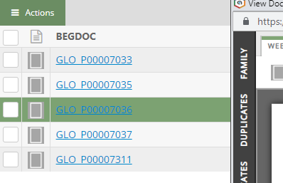
Perform Mass Actions
Selected documents may be tagged, edited, or exported.
-
Select
the check boxes associated with any documents you would like to perform a mass action.
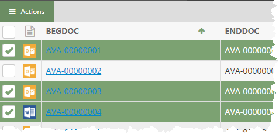
-
Click
in the action toolbar to display the Actions menu.
Tag Multiple Documents
- From the Actions menu, choose Tag Documents
to display the coding form/tag palette dialog as shown in the following figure.
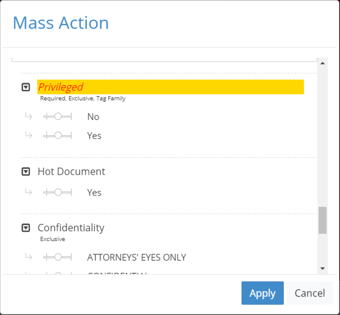
Note: Coding form rules are not enforced when tags are applied in this manner.
- Do any of the following:
-
Select the applicable tag group.
-
Add individual tags by moving the slider over to the right as shown in here:
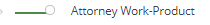
-
Remove tags by moving the slider to the left as shown in here:
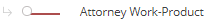
Note: When the slider control is left in the center, the tag remains unchanged as shown here:
- Click . The Mass Action dialog closes and applies the fields/tags to the selected documents. The previously selected documents in the selected Relationship menu revert to the default status; they are all cleared. The coding form/tag palette reflects the changes made in the Mass Actions dialog.
Note: A prompt may appear if invalid characters and/or formats are entered in the coding form or if the number of characters exceed the amount allowed for a field.
- Repeat the previous steps for other groups of documents needing to be tagged in the same way.
Edit Multiple Fields
- From the Actions menu, choose Edit Fields
to display the Apply Mass Action Edit dialog.
-
In the
Edit Fields Options list, select one of the following actions:
-
Search and Replace: Find specific
content in a selected field(s) and replace it with different content.
See step 3.
-
Copy Field: Copy the content of
one field to another field. See step 4.
-
Overwrite Field: Replace whatever
content exists in a selected field(s) with different content. See step 5.
-
If you selected Search
and Replace:
-
In
the list of Available Fields,
double-click each field to be changed in the same way. Alternatively,
use Shift+click or Ctrl+click to select a contiguous or non-contiguous
set of fields, respectively, then click > to move these fields into
the Selected Fields list.
-
Enter
the content to be replaced in the Search
for box. This entry is not case sensitive.
|

|
Tip:
An entry is required in the Search
box. If you want to replace empty fields with content, use the
Overwrite Field option.
|
-
Enter
the new content in the Replace with box. The format of your entry must
match the field type (for example, if a Date field needs to be changed
from 01/01/2014 to another date, use the same format for your replacement
entry). For text entries, the capitalization used here will be used in
the selected field(s).
-
Skip to step 6.
Example:
All or part of a field’s content can be entered. For example, a custodian's
name might be entered as both “Jon Smith” and “John Smith”
in your case. For consistency, you could search for “Jon” and replace
it with “John” so that the company name is consistent. See the
following figure.
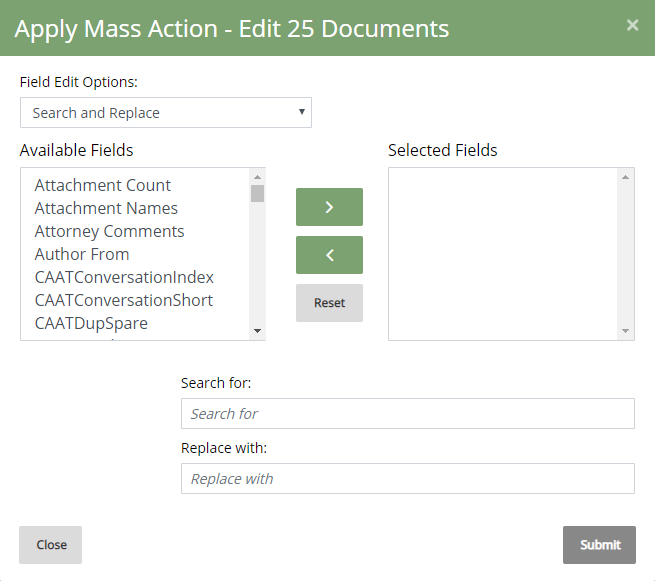
-
If you
selected Copy Field:
-
In
the Copy From field, select the
field containing the content you want to copy.
-
In
the Copy To field, select the
field in which the same content should be used.
-
Skip
to step 6.
-
If you selected Overwrite
Field:
-
In
the list of Available Fields, double-click each field to be changed in
the same way. Alternatively, use Shift+click or Ctrl+click to select a
contiguous or non-contiguous set of fields, respectively, then click >
to move these fields into the Selected Fields list.
-
Enter
the new content in the Overwrite Selected Field with this Text box. The
format of your entry must match the field type (for example, if a Date
field needs to be changed from 07/25/2014 to another date, use the same
format for your replacement entry). For text entries, the capitalization
used here will be used in the selected field(s).
-
Go
to step 6.
-
Click
Submit.
-
To perform another mass action on the same
selected documents, click Edit
and repeat this procedure or complete one of the following:
- Export Data for Multiple Records
- Tag Multiple Documents
-
When you are finished, click Close.
Export Data for Multiple Documents
-
From the Actions menu, choose Export
to display the Export dialog.
-
Select the records to be exported:
-
From the
Output Type drop-down menu, choose .CSV File or DAT file.
- From the
Encoding drop-down menu, choose Unicode, ASCII, or .UTF-8.
-
Click Export,
The selected output file type is generated with the file name: Export.CSV or Export.DAT.
|

|
Note: The file size will
be monitored by . If it reaches the size limit (1
GB or as configured by your administrator), a message will alert
you to the fact and the process will be canceled. To address this
issue, reduce the size (select fewer records and/or fewer columns
of data), or contact your administrator for assistance.
|
Assign Documents to a Review Pass
Documents may be assigned to an existing review pass. When the documents are assigned to the review pass, they are automatically batched for that review pass eliminating the need to access the Review Pass screen, refresh, and create batches manually.
See Assign Documents to a Review Pass for procedures.
Mass Action Print Multiple Documents
- From the Actions menu, choose Print to PDF. The Print to PDF dialog opens.
-
Complete the Print to PDF dialog by selecting all needed options. For instructions on how to do so, click here.
-
Options tab:
-
Original images only: to add image keys to
the bottom right-hand corner of each page, select the Image
Key option in the Quick Endorsements
area.
-
Original images only: to include a text watermark,
enter the needed text in the Watermark
field. This text will appear “behind” existing document content, similar
to a stamp. (Note: redactions may obscure some or all of a watermark.)
-
To print images from more than one image set
(to minimize or eliminate the number of missing images), complete the
following steps:
-
Add
all image sets (original and production) from which images may be used
to the Selected list. To do so, select the image set(s) in the Available list and click the right arrow.
-
Review
the selected image sets; if any set is not needed, click on it in the Selected
list, then click the left arrow to move it to the Available
list.
-
Review
the order of image sets. The order in the Selected
list determines how finds a document to be printed. For each
image:
-
looks first in the image set at the top of the list; if the image
is found, it will be printed.
-
If
the image is not found in the first set, checks the second
set; if the image is found, that is the version that will be printed.
-
If
the image is not found in the first or second sets, continues
to check remaining image sets in the Selected
list, from top to bottom. As soon as it finds the image, that is the version
that will be printed.
-
To
change the order of image sets in the Selected
list, click the name of an image set to be moved, then click the up or
down buttons until the image set is in the needed position. Repeat to
move other image sets until the list is in the needed order.
-
If needed, select the Include
“Image Missing” slip sheet if image unavailable option.
-
To print only original images, ensure that
<Original Images> is in
the Selected list and skip to
step 6. If original images are
missing, they will be skipped in the print job.
-
Original images only: reviewers’ annotations
(embedded text, highlighting, and/or mark-ups) will be printed by default
if they exist. Take any of the following actions to change annotation
settings:
-
To
remove all annotations in original images from the print job, clear the
Print Annotations option.
-
To
remove individual annotations in original images from the print job, click
each annotation to be removed.
-
Original images only: all redactions will be
printed in solid format by default if they exist. If you have the permission
to modify/delete other users’ redactions, take any of the following actions
to change redaction settings:
-
To
remove all redactions in original images from the print job, clear the
Print Redactions option.
-
To
remove individual redactions in original images from the print job, click
each redaction to be removed.
-
To
change redaction format, select the needed format from the list below
the redactions list. In this figure, the Crosshatch format is being selected.
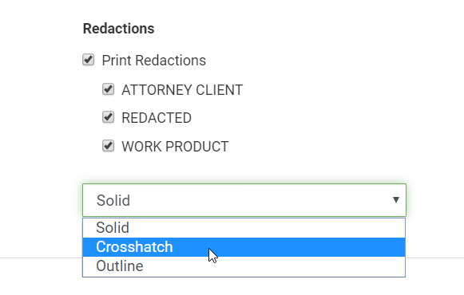
-
Define other aspects of the print job using
the procedures described in this section. Or, click Save
if the print job is ready.
-
Slip Sheets tab:
A slip sheet is a separator page between documents.
If printing a single document, a slip sheet allows you to include a cover
sheet with document-specific detail. To include slip sheets in your print
job:
-
Select the Include
Slip Sheets option.
-
For a plain slip sheet, click the Blank
Page option and skip to step 4.
-
To include document-specific information in
the slip sheet:
-
Click
the Fields/Custom option and complete
any of the following steps (b, c, and/or d).
-
To
include a custom message, enter it in the Custom
Text field.
-
To
include field content, in the Available
Fields list, select the fields to be included in the slip sheets.
-
To
include tags from selected tag groups, in the Available
Tag Groups list, select the groups to be included in the slip sheets.
-
Define other aspects of the print job using
the procedures described in this section. Or, click Save
if the print job is ready.
-
Endorsements tab:
Endorsements are document details printed in the header
and/or footer of documents in the original image set.
|
|
Note: Endorsements are for
original images only; they will not be added to production-set
images.
|
To include endorsements in your print job:
-
Click
the Endorsements tab and continue with the following steps.
-
To include field content in each document’s
header and/or footer:
-
Click
the Data Fields tab.
-
Select
one or more fields to be included in a specific area in the header or
footer.
-
At
the bottom of the fields list, select the location where the field(s)
should be printed, as shown in this example.
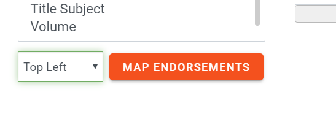
-
Click
Map Endorsements.
-
Repeat
these steps to include other fields in other locations.
-
To include tag details in the header or footer,
click the Tag Options tab, then
repeat step 2, selecting tags
instead of fields.
-
To include a custom message in the header or
footer:
-
Click
the Custom Text tab.
-
Click
in the custom text area and type the information (a single line) to be
included.
-
At
the bottom of the custom text area, select the location where the custom
text should be printed, as explained in step
2.
-
Repeat
these steps to add custom text to other locations.
-
Review your endorsements. If changes are needed:
-
For
an area containing endorsements on multiple lines, change the order of
the lines by clicking an item and clicking the corresponding  or
or  button to move the line up or down, respectively.
button to move the line up or down, respectively.
-
To remove a single endorsement from a particular area, double-click on the endorsement in question.
- To
remove all endorsements from a particular area, click Clear
for that area.
-
To
remove all endorsements for all areas, click Clear
All.
-
Define other aspects of the print job using
the procedures described in this section. Or, click Save
if the print job is ready.
- Once all print options have been defined, click Save. A prompt appears indicating the documents were added to the Job Manager to be processed. For more information about the Job Manager, see Overview: Job Manager.
Image Multiple Documents
- Click
in the mass action toolbar to display the menu.
- Choose Image. The Image dialog appears.
-
Complete the Image dialog by selecting all needed options. For instructions on how to do so, click here.
|
Color
Options
|
Select the method by which colors will
be processed.
(Note: Color
rendering is explained on many public websites. Refer to those
resources if you want details on color settings.)
|
|
Use eCap project default
|
Use
the color settings of the selected eCapture project.
|
|
Black and white (1 bit)
|
Renders
as Group 4 TIFF
|
|
Grey scale (8 bit)
|
Renders
as LZW TIFF
|
|
Color (8 bit)
|
Renders
as LZW TIFF
|
|
True color (24 bit)
|
Renders
a JPG
|
|
eCapture
Project
|
Select the eCapture project to be used
for the imaging job. Files will be processed
using all eCapture project settings (except color settings
if you selected color options for this job).
|
|
Original
File Name
|
Select
the fields containing the Original File Name and Location,
to be included in placeholder files for documents with no
associated native files.
|
|
Original File
Location
|
- Once all options have been defined, click Submit. A prompt appears indicating the Image job has started.
OCR Multiple Documents
-
Click
in the mass action toolbar to display the menu.
- Choose OCR.
- A confirmation message appears. To proceed with the OCR job, click OK. A message displays in the bottom-right corner of the screen, indicating the documents were added to the Job Manager to be OCRed. For more information about the Job Manager, see Overview: Job Manager.
Check in Batches
After all documents in a batch have been marked as reviewed (all coding form rules have been met and/or required tags applied), the batch can be marked as complete and checked in. Once the batch is checked in, the next available batch will open in the same review pass by default. An incomplete batch may be submitted as 'Not Assigned' by the batch reviewer. This batch can be accessed by another reviewer. The system automatically un-assigns a batch after 30 minutes of inactivity by default.
See Check In Batches for additional information and procedures.
Related Pages: